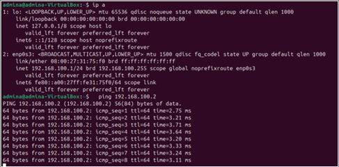
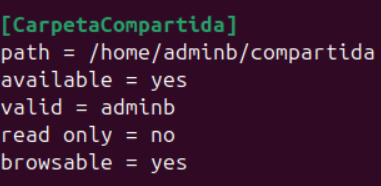

Introducción
En la actualidad, las tecnologías en el transporte de información y envío de datos entre equipos y servidores juegan un papel fundamental en los servidores. Es crucial comprender que el cableado debe estar realizado correctamente si se desarrollan desde el paso cero. Este informe detalla cómo se establece y controla un entorno de sistema de redes de conexión alámbrica, desde la configuración de servicios de red hasta la visualización final del desarrollo de la actividad.
El objetivo principal de este trabajo es conocer las actividades desarrolladas en la práctica de sistema de redes, en este caso, Linux, para reforzar los aprendizajes y proporcionar a futuros administradores de sistemas una guía básica. A lo largo del documento se describirán las acciones llevadas a cabo, los problemas enfrentados y las soluciones aplicadas para alcanzar los objetivos propuestos, así como las experiencias adquiridas durante el desarrollo del proyecto.
Resumen y Abstract
Resumen
Este informe detalla el montaje de una minired donde se estableció y verificó la conectividad entre dos computadores con sistemas operativos Windows. A su vez, cada computador contaba con una máquina virtual donde se implementó el sistema operativo Linux. La práctica comenzó con la conexión física de los dispositivos mediante cables UTP que previamente fueron realizados y la configuración de sus adaptadores Ethernet. Una parte importante fue la asignación de direcciones IP estáticas y máscaras de subred a cada máquina, la configuración de IP estática en Windows para la práctica fue de Clase C, aunque también se exploraron las diferentes clases de direcciones IP (A, B y C). Para la verificación de la conectividad, se emplearon algunos comandos significativos como lo son el ping, que se basa en el protocolo ICMP(Protocolo de Mensajes de Control de Internet) , y se comprobó la configuración IP utilizando ipconfig en Windows e ip a en Linux. Finalmente, se configuró la compartición de archivos y carpetas usando herramientas como Samba en Linux y las opciones nativas de Windows. Esta experiencia fue crucial para reforzar los conceptos clave del modelo TCP/IP, prestando especial atención a los niveles de Red y Enlace.Palabras clave: Redes, Conectividad, Linux, Windows, TCP/IP
Abstract
This report details the setup of a mini-grid where connectivity between two computers running Windows operating systems was established and verified. At the same time, each computer had a virtual machine where the Linux operating system was implemented. The practice began with the physical connection of the devices using UTP cables that were previously made and the configuration of their Ethernet adapters. An important part was the assignment of static IP addresses and subnet masks to each machine, the static IP configuration in Windows for the practice was Class C, although the different IP address classes (A, B and C) were also explored. For connectivity verification, some significant commands were used such as ping, which is based on the ICMP protocol (Internet Control Message Protocol), and the IP configuration was checked using ipconfig in Windows and ip a in Linux. Finally, file and folder sharing were configured using tools such as Samba on Linux and native Windows options. This experience was crucial to reinforce the key concepts of the TCP/IP model, paying special attention to the Network and Link levels.Keywords: Networking, Connectivity, Linux, Windows,TCP/IP
Desarrollo
En esta sección se detallan los pasos y procedimientos realizados durante la práctica, incluyendo la configuración de sistemas, comandos utilizados y la implementación de redes.
¿Cómo realizar un sistema de redes?
Para iniciar el desarrollo que conlleva la instalación de un sistema de red, como apoyo se definirán puntos clave que fundamentarán el análisis y la comprensión del contenido. Primero, se abordará la definición de una arquitectura de red.
La arquitectura de red es la forma en que los servicios y dispositivos de red se estructuran en conjunto para satisfacer las necesidades de conectividad de los dispositivos y a las aplicaciones cliente. En la arquitectura de red existen tres tipos de redes empresariales más habituales:
- Redes para centro de datos: Que conectan servidores a fin de alojar una amplia gama de datos y aplicaciones para que estén disponibles para su uso.
- Redes de acceso: Diseñadas para incorporar a los usuarios de distintas sucursales y ubicaciones.
- Redes de área extendida (WAN): Conectan a los usuarios con las aplicaciones a distancias cortas o largas.
Las redes deben admitir una amplia variedad de aplicaciones y servicios, así como funcionar a través de los distintos tipos de cables y dispositivos que componen la infraestructura física.
Estructura de la red
Los tres elementos comunes de la comunicación son:
- El origen del mensaje.
- El canal.
- El destino del mensaje.
Los dispositivos finales permiten la interacción entre los seres humanos y la red de comunicaciones. Los datos se originan con un dispositivo inicial, fluyen por la red y llegan a un dispositivo final.
Clasificación de las redes
Según la tecnología de transmisión:
- Redes por difusión (Broadcast Networks): Las estaciones comparten un canal. Ejemplo: Ethernet.
- Redes punto a punto: Enlace entre equipos. Ejemplo: Enlace entre Routers.
Según el tamaño:
- LAN (Redes de área local)
- WAN (Redes de área amplia)
- SAN (Red de área de almacenamiento)
- PAN (Red de área personal)
- CAN (Red de área de campus)
Principios de redes (Networking)
Las personas utilizan diferentes tipos de redes todos los días:
- Sistemas de correo
- Sistemas telefónicos
- Sistemas de transporte público
- Redes de computadoras corporativas (Intranet y Extranet)
- Internet
Una red puede ser tan simple como dos computadores conectados por un cable o tan complejas como cientos de computadores conectados a dispositivos que controlan el flujo de información.
Una intranet es una plataforma digital cuyo objetivo es asistir a los empleados y terceros (outsourcing) en la generación de valor para la empresa, poniendo a su disposición activos como:
- Contenidos
- Archivos
- Procesos de negocio
- Herramientas
Facilitando la colaboración y comunicación entre las personas y los equipos. La extranet es una red privada controlada, definida por Gartner como “una red corporativa basada en Internet que facilita las relaciones entre empresas al vincular una empresa con sus proveedores, clientes u otros socios comerciales externos”.
Un cortafuegos es un dispositivo de seguridad de red que supervisa el tráfico de red entrante y saliente, y decide si permite o bloquea tráfico específico en función de un conjunto definido de reglas de seguridad.
Principales pasos para realizar una red entre equipos
Paso 1: Medio Físico
Mediante un switch y cables directo RJ-45 se conectan los computadores.
Paso 2: Asignación de direcciones IP estáticas en las PCs físicas
- "Configuración de red e Internet".
- "Cambiar opciones del adaptador".
- Clic derecho sobre tu adaptador Ethernet → "Propiedades".
- Selecciona Protocolo de Internet versión 4 (TCP/IPv4) → "Propiedades".
Se asigna una IP tipo C ya que es la recomendada para las conexiones de red privada y máquinas virtuales.
- PC1: 192.168.1.2
- PC2: 192.168.1.3
Paso 3: Configuración de las máquinas virtuales en VirtualBox
- Ambas máquinas virtuales se apagan para configurar la red.
- Dentro de Oracle VirtualBox nos vamos a Configuración → Red en cada VM.
- En Adaptador 1, se elige:
- "Habilitar adaptador de red".
- Modo de conexión: Adaptador puente (Bridge Adapter).
- Nombre: selecciona el adaptador Ethernet físico en este caso Realtek.
Esto nos ayudará a que la VM comparta el mismo adaptador que la red física.
Paso 4: Comandos en Terminales – Configurar y Verificar Conexión Entre VMs
Se edita el archivo de configuración de red de la VM con Netplan:
network:
version: 2
ethernets:
enp0s3:
dhcp4: no
addresses: [192.168.100.1/24]
nameservers:
addresses: [8.8.8.8, 8.8.4.4]
network:
version: 2
ethernets:
enp0s3:
dhcp4: no
addresses: [192.168.100.2/24]
nameservers:
addresses: [8.8.8.8, 8.8.4.4]
Una vez se configura la IP con el comando ip a, se realiza una comprobación con ping:
- PC1 a PC2
- PC2 a PC1
Paso 5: Configurar tipo de IP
Configuración con switch IP clase A:
Netplan para cambiar la clase de IP a A

Se verifica con ip a si el cambio fue efectivo y se verifica con ping .
Configuración con switch IP clase B y clase C:
# Configuración IP clase B
# Configuración IP clase C
Paso 6: Crear carpeta compartida y compartir Archivos
- Se puede ingresar a los usuarios de la otra máquina virtual por SSH para comprobar la conectividad.
- Creamos la carpeta y configuramos su acceso con Samba:
- Permisos de la carpeta. 
- Contraseña de Samba para ingresar a la carpeta.
- Una vez Samba esté instalado, los computadores se podrán ver en REDES.
- En este caso, admin b ha sido configurado como servidor; se usa el usuario admin y la contraseña de Samba.
Conclusión
La práctica realizada nos permitió comprender de forma aplicada los principios fundamentales del establecimiento de una red de área local, integrando tanto equipos físicos como entornos virtualizados. A través del montaje, configuración y verificación de conectividad entre máquinas con sistemas operativos Windows y Linux, fue posible afianzar los conocimientos sobre direcciones IP, clases de red, configuración de adaptadores, uso de comandos de red y herramientas de compartición de archivos como Samba.
Además, la experiencia de volver a trabajar en ambos entornos operativos fortaleció habilidades técnicas clave como la edición de archivos de configuración, el manejo de terminales, y la resolución de problemas de conectividad. Esta actividad nos permitió también observar la importancia de una correcta planificación y configuración en redes, evidenciando cómo cada capa del modelo TCP/IP cumple una función específica y vital para lograr una comunicación eficiente.
Anexos
Se presentan documentos adicionales, gráficos y cualquier material complementario que respalde el contenido del informe.

Referencias
- Documentos e imágenes enviados por el docente.
- Documentos e imágenes tomadas durante el proceso de desarrollo.
- Borrero Castellanos, J. C. (s.f.). Arquitectura TCP/IP [PDF]. Facultad de Ingeniería de Sistemas.
- BorreroJC. (s.f.). Guía práctica para crear una minired. Archivos e imágenes.
- Vivani.net. (2012, abril 11). Cableado estructurado: Cable directo y cable cruzado. https://vivani.net/2012/04/11/cableado-estructurado-cable-directo-cable-cruzado/
- DeepL SE. (s.f.). DeepL Translator. https://www.deepl.com/translator